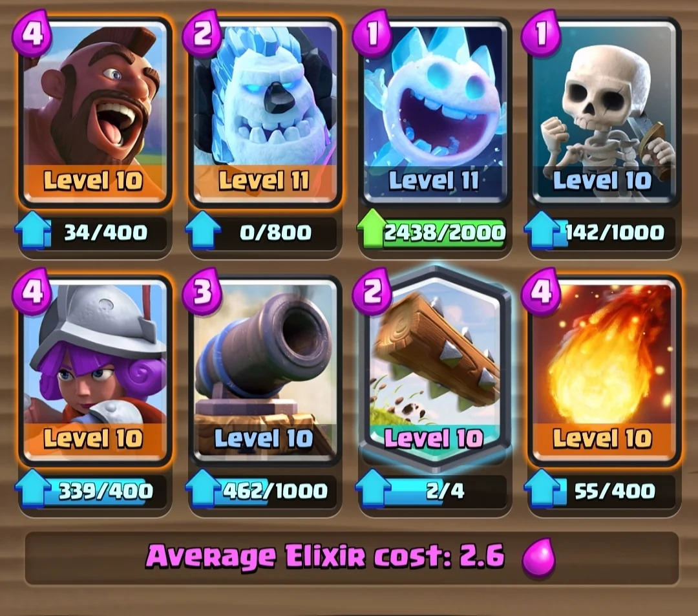

3.5 Musketeer's CR Decks
In this project you can see the different decks that me and my friends use in the game of Clash Royale. Our deck's differences show the variety of play styles, likings, and approaches we have to the game in order for us to win. Despite the difference in decks, we are connected by our love for the game that lets us make our own deck the way we want it to be making the game enjoyable
Napc's Deck
In this page you can see my favorite deck to use. This is a famous deck called the 2.6 hog cycle deck. I find this deck fun to use and it is a very helpful deck in terms of defending, its not easy at first to learn this popular deck but once learned it is very versatile against other types of decks. This deck has helped me get through many arenas and I have learned different strategies with it that compliments with my personal play style.

W/L Ratio of 2.6 hog cycle deck from october 6-12
| Monday | Tuesday | Wednesday | Thursday | Friday | Saturday | Sunday | |
|---|---|---|---|---|---|---|---|
| Wins | 6 | 3 | 9 | 4 | 7 | 2 | 4 |
| Loses | 4 | 5 | 2 | 2 | 1 | 7 | 1 |
| Total | 10 | 8 | 11 | 6 | 8 | 9 | 5 |
| Win% | 60% | 37.5% | 81.82% | 66.67% | 87.5% | 22.22% | 80% |

Watch on Youtube: How to Play 2.6 Hog Cycle Like a PRO!!